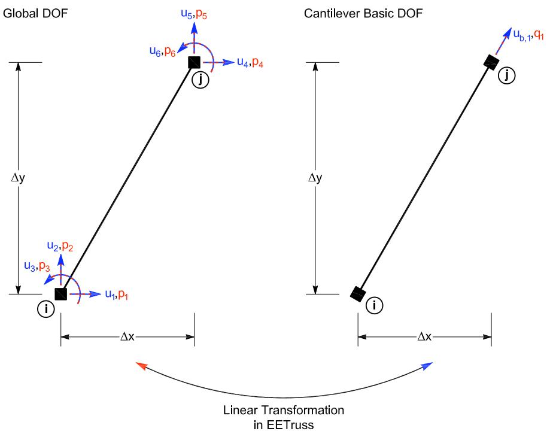

3.5. truss 桁架实验单元
3.5.1. 命令
此命令用于构造 truss 实验单元对象。两个节点定义此单元。
truss （site）
expElement truss eleTag iNode jNode -site siteTag -initStif Kij <-tangStif tangStifTag> <-iMod> <-noRayleigh> <-rho rho> <-cMass>
truss （server）
expElement truss eleTag iNode jNode -server ipPort <ipAddr> <-ssl> <-udp> <-dataSize size> -initStif Kij <-tangStif tangStifTag> <-iMod> <-noRayleigh> <-rho rho> <-cMass>
参数 |
说明 |
|---|---|
$eleTag |
唯一单元标签 |
\(iNode, \)jNode |
端节点标签 |
$siteTag |
先前定义的站点对象的标签 |
$Kij |
单元的初始刚度矩阵分量（按行排列） |
-iMod |
使用Nakashima初始刚度修正法进行误差校正（可选，默认值为false） |
-noRayleigh |
不考虑瑞雷阻尼（可选，默认值为考虑） |
$rho |
单位长度质量（可选，默认值 = 0.0） |
-cMass |
用于形成一致质量矩阵（可选） |
$ipPort |
中间层服务器的IP端口 |
ipAddr |
中间层服务器的IP地址（可选） |
-ssl |
使用OpenSSL进行安全传输（可选） |
$size |
发送的数据大小（可选） |
-udp |
使用udp进行数据传输（默认是tcp/ip） |
3.5.2. 示例
# Define geometry for model
# _____________
# node $tag $xCrd $yCrd $mass
node 1 0.0 0.0
node 2 144.0 0.0
node 3 168.0 0.0
node 4 72.0 96.0
# Define experimental site
# _____________
# expSite LocalSite $tag $setupTag
expSite LocalSite 2 2
# Define experimental elements
# _____________
expElement truss 1 3 4 -site 2 -initStif [expr 3000.0*5.0/135.76]
节点 3 和 4 连接上述二维 truss 实验单元。该单元使用本地实验站点定义。该单元的初始刚度为 [expr 3000.0*5.0/135.76] = 110.5。该单元的初始刚度为\(\mathbf{K}_i = \left[110.5\right]\)

3.5.3. 记录Recorder
在创建 ElementRecorder 对象时（参见 OpenSees 手册），对truss实验单元的有效查询包括：
全局力：force, forces, globalForce, globalForces
局部力：localForce, localForces
基本力：basicForce, basicForces, daqForce, daqForces
控制（命令）位移：defo, deformation, deformations, basicDefo, basicDeformation, basicDeformations, ctrlDisp, ctrlDisplacement, ctrlDisplacements
控制（命令）速度：ctrlVel, ctrlVelocity, ctrlVelocities
控制（命令）加速度：ctrlAccel, ctrlAcceleration, ctrlAccelerations
数据采集（反馈）位移：daqDisp, daqDisplacement, daqDisplacements
数据采集（反馈）速度：daqVel, daqVelocity, daqVelocities
数据采集（反馈）加速度：daqAccel, daqAcceleration, daqAccelerations
切线刚度：tangStif, tangStiff, expTangStif，expTangStiff，expTangentStif，expTangentStiff